MOSAIC 사용 설명서
MOSAIC 버전 0.2.0의 설치 방법, 예제 파일을 이용한 분석 절차, 각 버튼과 설정값을 설명합니다.
MOSAIC(Multi-ROI Optical System for Analysis of Intracellular Calcium)은 Nikon ND2 고속 형광 영상에서 심근세포의 Ca²⁺ 전이(transient)를 분석하는 프로그램입니다. 한 시야 안의 여러 세포나 세포 일부에 ROI를 놓고, 박동마다의 칼슘 신호를 검출해 진폭, time to peak, 최대 상승 속도, 감쇠 시간을 계산합니다.
- 처음이라면 1. 설치 → 3. 예제로 따라하기를 순서대로 해 보세요. 약 20분 걸립니다.
- 특정 버튼이 궁금하면 4. 버튼 사전에서 번호로 찾으세요.
- 자신의 데이터를 분석하기 전에는 5. 설정값 고르는 법과 7. 알려진 제약을 꼭 읽으세요.
준비물
- Windows 10/11 또는 macOS 컴퓨터. RAM은 분석할 ND2 파일 크기의 2배 이상을 권장합니다(예제 파일은 0.3 GB라 대부분의 컴퓨터에서 됩니다).
- 인터넷 연결. 첫 실행 때 필요한 부품을 자동으로 내려받습니다.
- 홈페이지에서 받은 MOSAIC 프로그램(ZIP)과 예제 파일
MOSAIC_example_2Hz.nd2 - 로컬 디스크의 작업 폴더. Dropbox, OneDrive, iCloud, Google Drive 폴더는 피하세요.
1설치와 실행
설치는 컴퓨터마다 한 번만 하면 됩니다. 이후에는 파일 하나를 더블클릭해서 실행합니다.
1.1Python 설치
MOSAIC은 Python으로 만들어져 있어 Python 3.10 이상이 필요합니다. 이미 설치되어 있다면 건너뛰세요.
- python.org/downloads에서 Download Python 버튼을 눌러 설치 파일을 받습니다.
- 설치 파일을 실행합니다.
- Windows: 첫 화면 아래쪽의 Add python.exe to PATH를 반드시 체크한 뒤 Install Now를 누릅니다.
- macOS: 안내에 따라 설치를 끝냅니다.
Windows에서 Add python.exe to PATH를 체크하지 않으면 MOSAIC이 Python을 찾지 못합니다. 이 경우 Python 설치 파일을 다시 실행해 Modify로 옵션을 켜거나, 삭제 후 다시 설치하세요.
1.2MOSAIC 받기
- 홈페이지 다운로드에서 MOSAIC v0.2.0 (ZIP)을 받습니다.
- ZIP 파일을 오른쪽 클릭 → 압축 풀기로 로컬 폴더에 풉니다. 예:
C:\MOSAIC - 같은 페이지에서 예제 파일
MOSAIC_example_2Hz.nd2를 받아 알기 쉬운 곳(예:C:\MOSAIC-data)에 둡니다.
첫 실행 때 수백 MB의 부품을 설치하는데, 동기화 프로그램이 그 파일들을 동시에 올리려고 잠그면 설치가 WinError 32 오류로 중단됩니다. 또 결과 폴더(_ana)가 ND2 파일 옆에 만들어지므로 ND2 파일도 쓰기 가능한 로컬 위치에 두는 것이 좋습니다.
1.3실행
| 운영체제 | 실행 방법 |
|---|---|
| Windows | MOSAIC 폴더의 run_app.bat을 더블클릭합니다. "Windows의 PC 보호" 창이 뜨면 추가 정보 → 실행을 누릅니다. |
| macOS | run_app.command를 더블클릭합니다. 차단되면 오른쪽 클릭 → 열기. 그래도 안 되면 터미널에서 chmod +x run_app.command를 한 번 실행합니다. |
첫 실행은 검은 창에 Creating Python virtual environment..., Installing Python packages...가 표시되며 몇 분 걸립니다. 끝나면 MOSAIC 창이 열립니다. 두 번째부터는 몇 초 안에 열립니다.
{kind=link}
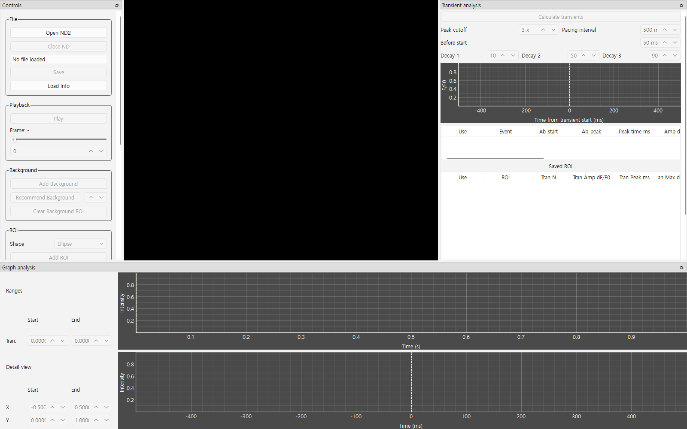
터미널로 실행하는 방법 (선택)
python -m venv .venv
source .venv/bin/activate # Windows: .venv\Scripts\activate
python -m pip install -e .
PYTHONPATH="$PWD/src" python -m mosaic.main2처음 보는 화면
MOSAIC 창은 네 영역으로 나뉩니다. 각 영역의 가장자리를 끌어 크기를 바꾸거나, 제목 줄을 끌어 위치를 옮길 수 있습니다.
{kind=link}
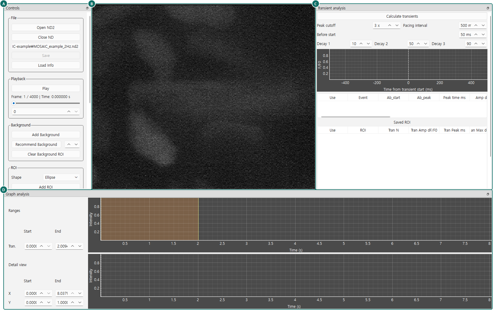
| 영역 | 하는 일 | 자세히 | |
|---|---|---|---|
| A | Controls | 파일 열기·저장, 재생, 배경 ROI, 세포 ROI, 광퇴색 보정, 상태 메시지(Status) | Controls 패널 |
| B | Image | 현재 프레임 영상. ROI를 여기에 놓고 끌어서 옮깁니다. 마우스 휠로 확대/축소. | 세포 ROI |
| C | Transient analysis | 전이 검출 설정, 평균 전이 그래프, 이벤트 표, 저장된 ROI 표 | Transient analysis 패널 |
| D | Graph analysis | 위: 전체 기록과 분석 구간(주황색 띠) · 아래: 확대해서 보는 상세 그래프 | Graph analysis 패널 |
Controls 맨 아래의 Status 칸은 방금 누른 버튼의 결과를 문장으로 알려 줍니다. 무언가 이상하면 먼저 Status를 읽으세요. 이 설명서의 "확인할 것"도 대부분 Status 문구를 기준으로 합니다.
3예제로 따라하기
예제 파일 MOSAIC_example_2Hz.nd2로 세포 한 개를 처음부터 끝까지 분석합니다.
| 예제 파일 정보 | |
|---|---|
| 내용 | 2 Hz 전기 자극 중인 성체 심근세포의 형광 칼슘 영상(원본 기록의 일부를 잘라낸 것) |
| 크기 | 288 × 240 px · 8-bit · 4,000 frames |
| 촬영 간격 / 길이 | 2.01 ms (≈ 500 frames/s) · 8.04 s |
| 파일 크기 | 295 MB |
3.1ND2 파일 열기
- Controls의 Open ND2를 누릅니다.
MOSAIC_example_2Hz.nd2를 선택하고 열기를 누릅니다.
{kind=link}
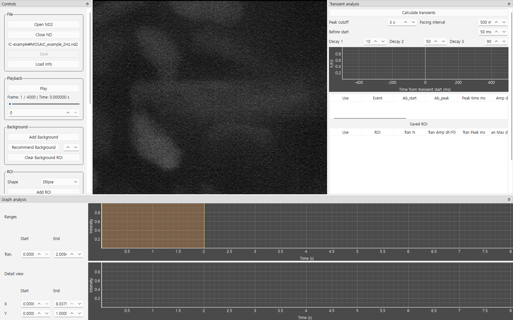
- Status:
Loaded ND2 | dtype=uint8 | sizes={'T': 4000, 'Y': 240, 'X': 288} … - Playback:
Frame: 1 / 4000 | Time: 0.000000 s - 아래 그래프의 시간축이 0–8 s입니다.
팁: Play를 누르면 실제 속도로 재생됩니다. 가운데 가로로 누운 세포가 박동마다 밝아지는 것을 볼 수 있습니다. 다시 누르면 멈춥니다.
3.2배경 ROI 놓기
카메라 잡음과 배경 밝기를 빼기 위해, 세포가 없는 곳에 배경 ROI를 둡니다.
- Add Background를 누릅니다. 영상 가운데에 파란 원이 나타납니다.
- 파란 원 안쪽을 끌어 오른쪽 아래의 어두운 빈 곳으로 옮깁니다.
- 원 테두리의 작은 손잡이를 끌어 세포에 닿지 않을 만큼 크기를 줄입니다.
{kind=link}
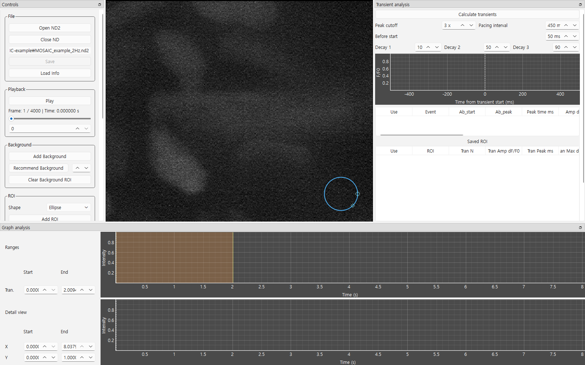
대안: Recommend Background를 누르면 처음 10 s 동안 가장 어두운 곳을 자동으로 찾아 줍니다. 무작위로 찾기 때문에 누를 때마다 위치가 다를 수 있으니, 결과 위치에 세포가 없는지 눈으로 확인하세요.
3.3세포 위에 ROI 놓기
- ROI 영역의 Shape를 Rectangle로 바꿉니다. 막대 모양 세포에는 사각형이 잘 맞습니다.
- Add ROI를 누릅니다. 노란 사각형이 가운데에 생깁니다.
- 사각형 안쪽을 끌어 가로로 누운 세포 위로 옮깁니다.
- 오른쪽 아래 ◇ 손잡이로 크기를, 오른쪽 가운데 ○ 손잡이로 회전을 조절해 세포 윤곽 안쪽에 맞춥니다.
{kind=link}
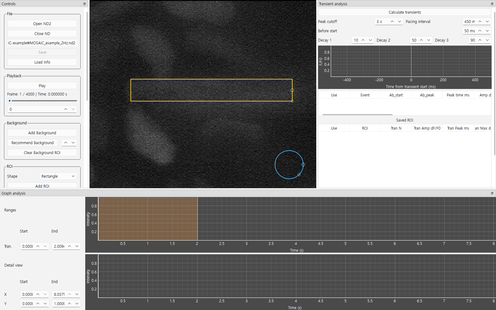
- 세포 경계보다 약간 안쪽. 경계를 넘으면 배경이 섞여 진폭이 작아집니다.
- 이웃 세포와 겹치지 않게.
- 세포 일부(예: 한쪽 끝)만 분석하고 싶으면 그 부분에만 작게 놓아도 됩니다.
선택 기능 (op) Auto ROI: 방금 놓은 ROI 안에서 처음 3 s 동안 밝기 변화가 큰 픽셀만 골라 다각형 ROI로 바꿉니다. 마음에 들지 않으면 같은 버튼((op) Undo Auto ROI)을 다시 눌러 되돌립니다.
3.4신호 계산하기
- Calculate를 누릅니다.
{kind=link}
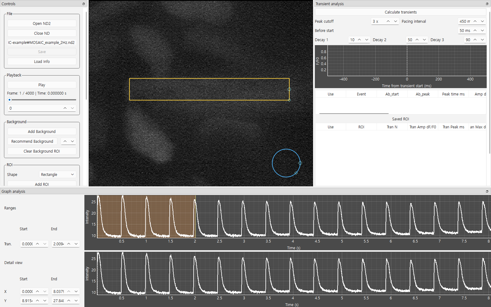
- 위 그래프에 규칙적인 봉우리가 약 16개 보입니다(8 s × 2 Hz).
- Status에
Background: set,Graph: background-corrected intensity가 포함됩니다.
처음 누를 때는 영상 전체를 메모리에 올리느라 잠시 멈춘 것처럼 보일 수 있습니다. ROI를 옮기거나 크기를 바꾼 뒤에는 반드시 다시 Calculate를 눌러야 신호가 갱신됩니다.
3.5분석 구간(Tran.) 정하기
위 그래프의 주황색 띠가 전이를 검출할 시간 구간입니다. 처음에는 기록의 앞 25%로 잡혀 있습니다.
- 주황색 띠의 오른쪽 가장자리를 끌어 거의 끝까지 넓힙니다. 또는 왼쪽 Ranges의 Tran. 칸에 Start 0.2, End 7.8을 입력합니다.
- 아래 상세 그래프에서 마우스 휠로 확대해 봉우리 모양을 살펴봅니다. 정확한 범위는 Detail view의 X 칸(예: 1 – 3 s)으로 지정할 수 있습니다.
{kind=link}
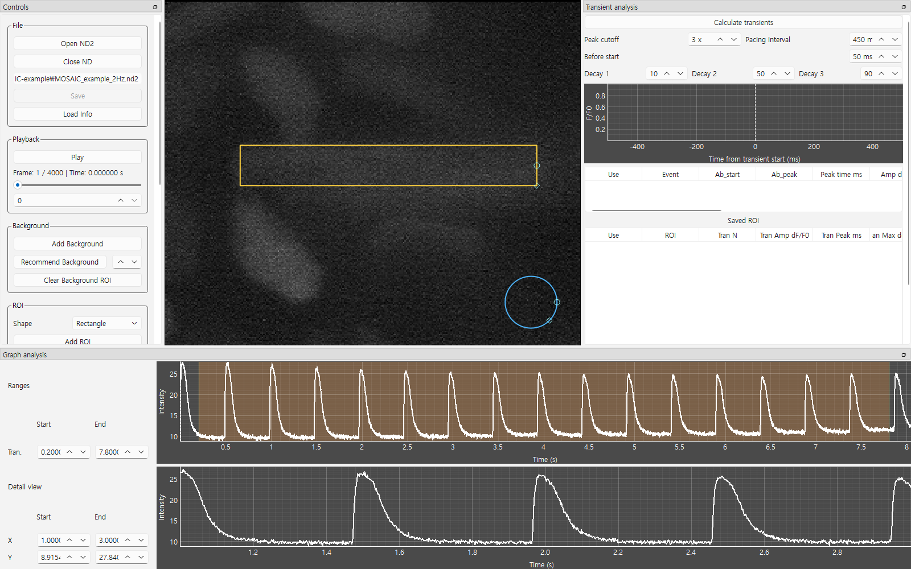
- 자극이 안정적인 구간만 포함하세요. 자극 시작 직후의 불안정한 박동이나 움직임·잡음이 있는 부분은 빼는 것이 좋습니다.
- 구간이 끝나기 전 Pacing interval만큼의 여유가 있어야 마지막 박동이 분석됩니다.
3.6Pacing interval 먼저 확인하기
오른쪽 Transient analysis의 Pacing interval이 450 ms인지 확인합니다. 2 Hz 자극용 기본값이므로 예제에서는 바꿀 필요가 없습니다. 다른 자극 빈도는 5. 설정값 고르는 법을 참고하세요.
광퇴색 보정도 이 값을 써서 박동 위치를 찾으므로, 광퇴색 보정보다 먼저 맞춰야 합니다.
3.7광퇴색 보정 (선택)
빛을 계속 받으면 형광이 서서히 약해져 기저선이 조금씩 내려갑니다. 기저선이 기울어 보이면 보정합니다.
- Controls의 Cal. Photobleaching을 누릅니다.
- 그래프에서 노란 점선(맞춘 기저선)과 빨간 점(기저선으로 쓴 구간)을 확인합니다.
- 빨간 점이 봉우리가 아닌 평평한 바닥에만 있으면 Confirm Photobleaching을 누릅니다.
{kind=link}
{kind=link}
- 미리보기 Status:
Photobleaching preview calculated (ratio=1). Press Confirm Photobleaching to apply. - 적용 후 Status:
Photobleaching correction confirmed and applied.
빨간 점이 봉우리 위에도 찍혀 있다면 박동이 검출되지 않은 것입니다. Pacing interval과 Peak cutoff를 확인하고 다시 Cal. Photobleaching을 누르세요. 되돌리려면 Reset Photobleaching.
3.8전이 계산하기
- Transient analysis 맨 위의 Calculate transients를 누릅니다.

- Status:
One average transient calculated from 14/14 selected events across 1 ROI trace(s). Pacing interval = 450 ms. - 검출 수(14)가 분석 구간 7.6 s 동안의 박동 수(약 15)와 비슷해야 합니다.
- 평균 그래프: 0 ms에서 급하게 오르고 약 30 ms에 정점, 이후 천천히 내려옵니다.
3.9이벤트 검토하기
이벤트 표의 한 줄이 박동 한 번입니다. 표를 오른쪽으로 스크롤하면 감쇠 시간 열이 이어집니다.
- Use 체크를 풀면 그 박동이 평균과 요약에서 빠지고, 평균 그래프가 즉시 다시 그려집니다.
- 빼는 것이 좋은 경우: 봉우리가 두 개 겹친 박동, 움직임 때문에 튄 신호, 모양이 뚜렷하게 다른 박동.
- 이벤트의 시간(Ab_start)을 보고 상세 그래프에서 해당 박동을 확대해 확인할 수 있습니다.
각 열의 뜻은 버튼 사전 – 이벤트 표를 참고하세요.
3.10ROI 저장하기
- Controls의 Save ROI를 누릅니다.
{kind=link}
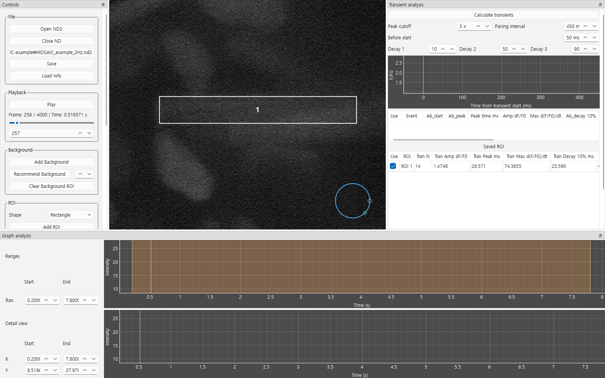
ROI 위치에 따라 조금 달라질 수 있습니다.
| Tran N | Tran Amp dF/F0 | Tran Peak ms | Tran Max d(F/F0)/dt | Decay 10% ms | Decay 50% ms | Decay 90% ms |
|---|---|---|---|---|---|---|
| 14 | ≈ 1.47 | ≈ 28.6 | ≈ 74 | ≈ 23.6 | ≈ 61.5 | ≈ 133.5 |
저장 후 작업 공간은 비워집니다. 다른 세포도 분석하려면 3단계(Add ROI)부터 반복하세요. 배경 ROI와 분석 구간은 그대로 유지됩니다.
3.11결과 내보내기
- Controls의 Save를 누릅니다.
ND2 파일과 같은 폴더에 MOSAIC_example_2Hz_ana 폴더가 만들어지고 다섯 개 파일이 저장됩니다. 파일 내용은 6. 결과 파일 읽는 법에 있습니다.
{kind=link}
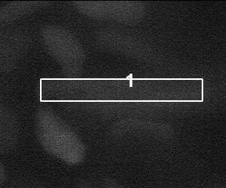
ROI.jpg: 어떤 세포를 분석했는지 기록으로 남습니다.Status: Saved 1 checked ROI(s) to …\MOSAIC_example_2Hz_ana.
Saved ROI 표에서 Use 체크를 푼 ROI는 내보내지 않습니다. 같은 파일로 다시 Save하면 기존 결과 파일을 덮어씁니다.
3.12분석 다시 불러오기
- 다음에 MOSAIC을 켜서 Load Info를 누릅니다.
MOSAIC_example_2Hz_ana\analysis_info.json을 선택합니다.- ND2 파일이 다시 열리고 저장된 ROI와 배경 ROI가 복원됩니다. Saved ROI 표의 줄을 누르면 그 ROI의 분석 결과가 표시됩니다.
{kind=link}
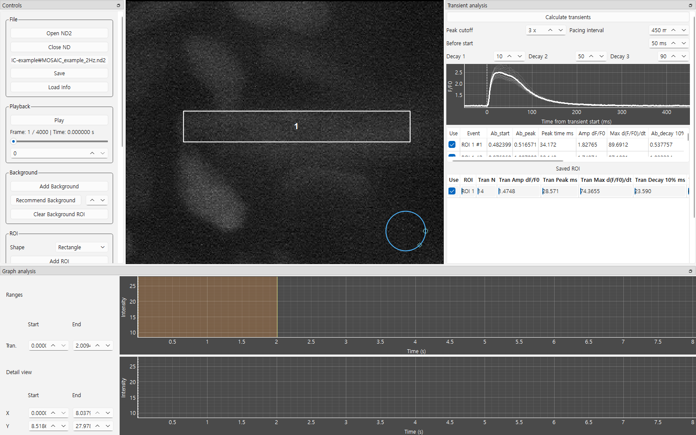
JSON에는 ND2 파일의 경로가 기록됩니다. ND2 파일을 옮겼다면 MOSAIC이 결과 폴더 근처에서 찾고, 찾지 못하면 원본 파일을 선택하라고 묻습니다. 저장된 결과는 다시 계산하지 않고 그대로 복원됩니다.
이상으로 분석의 전 과정을 마칩니다. 자신의 데이터도 같은 순서로 분석합니다.
4버튼 사전
그림의 번호와 표의 번호가 같습니다. 각 항목에 무엇을 하는지와 언제·어떻게 설정하는지를 적었습니다.
4.1Controls 패널
{kind=link}
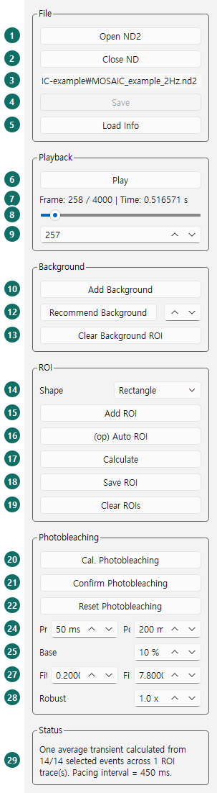
| # | 이름 | 설명 · 설정 방법 |
|---|---|---|
| File | ||
| 1 | Open ND2 | 분석할 .nd2 파일을 엽니다. 다른 파일을 열면 현재 ROI와 저장된 ROI가 모두 지워지므로, 먼저 Save하세요. |
| 2 | Close ND | 확인 창을 띄운 뒤 파일을 닫고 모든 ROI·분석을 지웁니다. |
| 3 | 파일 경로 | 열린 파일의 경로. 선택해서 복사할 수 있습니다. |
| 4 | Save | 저장된 ROI(Use 체크된 것)를 <파일명>_ana 폴더로 내보냅니다. Save ROI를 한 번 이상 해야 켜집니다. |
| 5 | Load Info | analysis_info.json으로 이전 분석을 복원합니다. |
| Playback | ||
| 6 | Play / Pause | 기록된 타임스탬프에 맞춰 실제 속도로 재생·정지합니다. 세포가 박동하는지, 움직이는지 확인할 때 씁니다. |
| 7 | Frame 표시 | Frame: 현재 / 전체 | Time: …. Time은 첫 프레임부터의 시간입니다. |
| 8 | 프레임 슬라이더 | 끌어서 원하는 프레임으로 이동합니다. 그래프의 흰 점선이 따라 움직입니다. |
| 9 | 프레임 번호 칸 | 번호를 입력해 이동합니다. 0부터 시작합니다(Frame 표시는 1부터). |
| Background | ||
| 10 | Add Background | 파란 원형 배경 ROI(120 × 120 px)를 가운데에 놓습니다. 세포 없는 곳으로 끌어 옮기세요. 배경 밝기는 모든 세포 신호에서 프레임마다 빼집니다. |
| 11 | Recommend Background | 반경 R인 원 100개를 무작위로 놓아 처음 10 s 평균이 가장 어두운 곳에 배경을 둡니다. 결과 위치를 눈으로 확인하세요. |
| 12 | R (반경) | 추천 배경 원의 반경(px). 기본 10. 빈 공간이 넓으면 키울수록 잡음이 줄어듭니다. |
| 13 | Clear Background ROI | 배경 ROI를 지웁니다. 이후 신호는 배경을 빼지 않은 값이 됩니다. |
| ROI | ||
| 14 | Shape | 다음에 추가할 ROI 모양. Ellipse(둥근 세포·영역), Rectangle(막대 모양 세포). 둘 다 회전됩니다. |
| 15 | Add ROI | 80 × 80 px ROI를 추가합니다. 여러 개 추가하면 한 번에 함께 분석됩니다(ROI 1, ROI 2 …). |
| 16 | (op) Auto ROI | 선택 기능. 가장 최근 ROI 안에서 처음 3 s 동안 변화가 큰 픽셀(상위 10%)을 감싸는 다각형으로 바꿉니다. 다시 누르면 되돌립니다. |
| 17 | Calculate | ROI마다 평균 밝기 − 배경을 계산해 그래프에 그립니다. ROI를 바꿀 때마다 다시 누르세요. 처음엔 영상 전체를 메모리에 올려 시간이 걸립니다. |
| 18 | Save ROI | 현재 ROI들의 신호·이벤트·요약을 저장하고 ROI를 잠급니다. 작업 공간은 다음 세포를 위해 비워집니다. |
| 19 | Clear ROIs | 저장하지 않은 현재 ROI와 분석을 지웁니다(저장된 ROI는 남음). |
| Photobleaching | ||
| 20 | Cal. Photobleaching | 기저선에 강건한 직선을 맞춘 미리보기를 그립니다. 노란 점선 = 맞춘 선, 빨간 점 = 사용한 기저선. |
| 21 | Confirm Photobleaching | 보정을 적용합니다(신호가 노란색). 전이 분석이 지워지므로 다시 계산하세요. |
| 22 | Reset Photobleaching | 보정 전 신호와 기본 설정으로 되돌립니다. |
| 23 | Pre 50 ms | 각 박동 시작 전 기저선에서 뺄 시간. 상승 직전이 기저선에 섞이면 늘리세요. |
| 24 | Post 200 ms | 각 박동 회복 후 뺄 시간. 감쇠 꼬리가 빨간 점에 섞이면 늘리세요. |
| 25 | Base 10 % | 보정 창에서 기저선으로 남아야 하는 최소 비율. 부족하면 그 ROI는 보정하지 않습니다(Status에 skipped). 빠른 자극에서 기저선이 짧으면 낮추세요. |
| 26 | Fit S | 보정에 쓸 구간 시작(s). 기본은 Tran. 구간을 따라갑니다. 직접 바꾸면 그 값을 유지합니다. |
| 27 | Fit E | 보정에 쓸 구간 끝(s). |
| 28 | Robust 1.0 × | 튀는 값에 대한 둔감도. 작게 하면 튀는 점의 영향을 더 줄입니다. 보통 1.0 그대로 둡니다. |
| Status | ||
| 29 | Status | 방금 한 동작의 결과와 오류를 문장으로 보여 줍니다. 항상 확인하세요. |
4.2Graph analysis 패널
{kind=link}
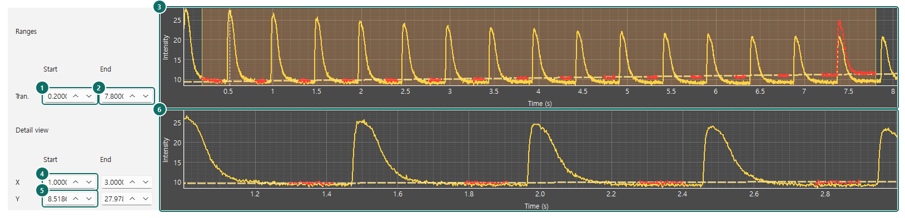
| # | 이름 | 설명 · 설정 방법 |
|---|---|---|
| 1 | Tran. Start | 전이 분석 구간의 시작(s). 주황 띠의 왼쪽 끝과 연동됩니다. |
| 2 | Tran. End | 전이 분석 구간의 끝(s). 마지막 박동 뒤로 Pacing interval 이상 여유를 두세요. |
| 3 | 전체 그래프 | 기록 전체의 신호. 주황 띠를 끌어 분석 구간을 정합니다. 흰 점선 = 현재 프레임. 이 그래프는 확대되지 않습니다. |
| 4 | Detail view X | 상세 그래프의 시간 범위(Start/End, s)를 숫자로 지정합니다. |
| 5 | Detail view Y | 상세 그래프의 밝기 범위를 숫자로 지정합니다. |
| 6 | 상세 그래프 | 마우스 휠 = 확대/축소, 끌기 = 이동. 봉우리 모양과 보정선을 자세히 볼 때 씁니다. |
4.3Transient analysis 패널
{kind=link}
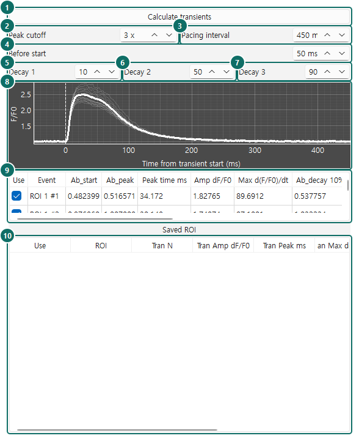
| # | 이름 | 설명 · 설정 방법 |
|---|---|---|
| 1 | Calculate transients | Tran. 구간에서 박동을 검출하고 평균·표를 만듭니다. 설정을 바꾸면 다시 누르세요. |
| 2 | Peak cutoff 3 × | 봉우리가 기저선 잡음의 몇 배를 넘어야 박동으로 인정할지. 잡음이 박동으로 잡히면 올리고(4–5), 작은 박동이 빠지면 내리세요(2). |
| 3 | Pacing interval 450 ms | 박동 사이 최소 간격과 박동 뒤 분석 창을 정합니다. 2 Hz 자극용 기본값이며, 다른 자극 빈도는 5. 설정값 고르는 법을 참고하세요. |
| 4 | Before start 50 ms | onset 앞 구간. 이 구간의 평균이 F₀(기준 밝기)가 됩니다. 박동 사이의 평평한 바닥 안에 들어가도록 두세요. |
| 5–7 | Decay 1 / 2 / 3 10 / 50 / 90 % | 피크에서 진폭의 몇 %가 줄어든 시점을 보고할지. 바꾼 뒤 Calculate transients를 다시 누르세요. |
| 8 | 평균 전이 그래프 | 가는 선 = 체크된 개별 박동, 굵은 선 = 평균(F/F₀). X축은 onset부터의 시간. |
| 9 | 이벤트 표 | 박동 한 번당 한 줄. Use로 포함/제외. 열 설명은 아래 표. |
| 10 | Saved ROI 표 | 저장된 ROI마다 한 줄. Use = 내보내기 포함 여부. 줄을 누르면 그 ROI 분석을 다시 보여 줍니다. |
이벤트 표의 열
| 열 | 뜻 | 단위 |
|---|---|---|
| Use | 체크 = 평균·요약에 포함 | |
| Event | ROI 이름과 박동 번호 (예: ROI 1 #3) | |
| Ab_start | onset(진폭 10% 도달) 시각, 기록 시작 기준 | s |
| Ab_peak | 피크 시각 | s |
| Peak time ms | Time to peak = Ab_peak − Ab_start | ms |
| Amp dF/F0 | (피크 − 기저선) ÷ F₀ | 배 |
| Max d(F/F0)/dt | onset~피크 사이 가장 가파른 상승 속도 | s⁻¹ |
| Ab_decay X% | 진폭이 X% 줄어든 시각 | s |
| Decay time X% ms | 피크부터 X% 감쇠까지 걸린 시간 | ms |
NA는 측정할 수 없었다는 뜻입니다(예: 분석 창 안에서 90%까지 내려오지 않음).
Saved ROI 표의 열
ROI(번호), Tran N(체크된 박동 수), Tran Amp dF/F0, Tran Peak ms, Tran Max d(F/F0)/dt, Tran Decay X% ms: 모두 체크된 박동들의 평균입니다. 저장된 ROI를 보는 중에 이벤트 표의 Use를 바꾸면 이 값도 갱신됩니다.
5설정값 고르는 법
자신의 데이터에서 무엇을 어떻게 정할지 순서대로 정리했습니다.
| 순서 | 설정 | 권장 | 확인 방법 |
|---|---|---|---|
| 1 | 배경 ROI | 세포·부유물이 없고 영상 가장자리 그림자가 아닌 곳. 가능한 넓게. | 재생해 보며 그 자리에 아무것도 지나가지 않는지 |
| 2 | 세포 ROI | 세포 경계 약간 안쪽, 이웃 세포와 겹치지 않게 | 여러 프레임에서 세포가 ROI 밖으로 움직이지 않는지 |
| 3 | Tran. 구간 | 자극이 안정된 구간, 끝에 Pacing interval 이상 여유 | 구간 안 봉우리 수를 셉니다 |
| 4 | Pacing interval | 자극 간격 × 0.9 (2 Hz → 450 ms 기본값, 1 Hz → 900 ms, 0.5 Hz → 1800 ms) | Tran N ≈ 구간 길이 × 자극 주파수 |
| 5 | Peak cutoff | 3에서 시작 | 빠진 박동이 있으면 낮추고, 잡음이 잡히면 올림 |
| 6 | 광퇴색 보정 | 기저선이 눈에 띄게 기울 때만. 기본값 사용 | 빨간 점이 바닥에만 있는지 |
| 7 | Before start | 50 ms (박동 사이 평평한 구간보다 짧게) | 평균 그래프의 0 ms 왼쪽이 평평한지 |
| 8 | Decay 수준 | 10 / 50 / 90 % (논문 기준) | NA가 많으면 분석 창(Pacing interval)이 짧은지 확인 |
논문이나 보고서에는 사용한 Pacing interval, Peak cutoff, Before start, 광퇴색 보정 여부와 MOSAIC 버전(v0.2.0)을 함께 적어 주세요.
6결과 파일 읽는 법
Save를 누르면 ND2 파일 옆 <파일명>_ana 폴더에 저장됩니다.
| 파일 | 내용 | 열 구성 |
|---|---|---|
analysis.xlsx | ROI별 요약(Saved ROI 표와 같음). 통계 분석에 바로 씁니다. | ROI · Tran N · Tran Amp dF/F0 · Tran Peak ms · Tran Max d(F/F0)/dt · Tran Decay X% ms |
rawtrace.xlsx | ROI별 전체 신호(배경 차감, 광퇴색 보정 전) | Time s · ROI 1 · ROI 2 … |
transient.xlsx | ROI별 평균 전이 곡선(F/F₀). 그림 그릴 때 씁니다. | ROI n transient time s · ROI n transient F/F0 (ROI마다 두 열) |
ROI.jpg | 첫 프레임 위에 저장된 ROI 외곽선과 번호 | |
analysis_info.json | Load Info용 전체 기록(ROI 위치, 신호, 이벤트 선택) |
예제 결과의 크기: analysis.xlsx 2 KB, rawtrace.xlsx 95 KB, transient.xlsx 8 KB, ROI.jpg 36 KB, analysis_info.json 370 KB.
7알려진 제약 (v0.2.0)
결과를 올바르게 해석할 수 있도록 현재 버전의 동작을 적어 둡니다. 버전 간 바뀐 내용은 릴리스 노트에 기록합니다.
검출 기준과 검출되는 박동 수
MOSAIC은 자극에 따른 전이를 검출합니다. 상승 전 기저선이 안정적이고, 진폭이 Peak cutoff를 넘고, 진폭 25% 미만으로 30 ms 동안 회복되고, 상승이 회복보다 짧은 박동만 인정합니다. 느리거나 비정상적인 이벤트는 빠질 수 있고, 피크 뒤에 Pacing interval만큼의 기록이 없으면 측정하지 않습니다. 광퇴색 보정도 같은 검출을 쓰므로, 빠진 박동이 기저선 점(빨간 점)에 섞일 수 있습니다.
- Tran N을 구간 안의 예상 박동 수와 항상 비교하세요.
- Pacing interval을 Cal. Photobleaching보다 먼저 정하세요.
- 분석마다 사용한 설정을 기록·보고하세요.
| # | 제약 | 내용과 대처 |
|---|---|---|
| 2 | 메모리 | 처음 Calculate 때 영상 전체를 메모리에 올립니다. 필요량 ≈ 프레임 × 높이 × 너비 × 픽셀당 바이트 (예: 600 × 600 8-bit 12,406 frames ≈ 4.5 GB). RAM이 부족하면 매우 느려지거나 종료됩니다. |
| 3 | 영상 표시 범위 | 8-bit 영상은 0–255로, 8-bit 초과 영상은 첫 프레임 기준 대비로 표시합니다. 표시 설정은 측정값을 바꾸지 않습니다. |
| 4 | ND2 구조 | 단일 채널 time-lapse(T × Y × X)만 지원. 다채널·Z-stack·다지점 파일은 열 때 거부됩니다. |
| 5 | 고정 내부 설정 | 평활 창 20 ms, onset = 진폭 10%, 회복 = 진폭 25% 미만 30 ms 유지. 측정은 평활된 신호로 하므로, 매우 빠른 상승에서는 time to peak가 약간 길게 나올 수 있습니다. |
| 6 | 고정 ROI | ROI는 세포 수축이나 움직임을 따라가지 않습니다. 수동 ROI 배치가 결과에 영향을 줄 수 있습니다. |
| 7 | 화면에 없는 기능 | 카페인 유도(SR) Ca²⁺ 방출 분석 코드가 있으나 v0.2.0 화면에는 버튼이 없습니다. |
| 8 | 응답 없음 | 영상 로딩, Auto ROI, Recommend Background 중에는 창이 멈춘 듯 보입니다. Status가 바뀔 때까지 기다리세요. |
8문제 해결
| 증상 | 원인 | 해결 |
|---|---|---|
검은 창에 Failed to create .venv | Python 미설치·PATH 미등록, 또는 동기화 폴더 | Python을 PATH 옵션과 함께 설치 → MOSAIC을 로컬 폴더로 옮김 → .venv 폴더 삭제 → 다시 실행 |
WinError 32 (다른 프로세스가 파일 사용 중) | Dropbox·OneDrive·백신이 설치 파일을 잠금 | 동기화 폴더 밖으로 옮기고 .venv 삭제 후 다시 실행 |
| 검은 창이 뜨자마자 사라짐 | 오류 메시지를 볼 수 없음 | MOSAIC 폴더에서 주소창에 cmd 입력 → run_app.bat 실행해 메시지 확인 |
| Calculate 뒤 매우 느림·종료 | 메모리 부족 | 다른 프로그램 종료, RAM 큰 컴퓨터 사용 |
| 영상이 새하얗거나 새까맘 | 8-bit 초과 영상 / 원래 어두운 영상 | 표시만의 문제입니다. 측정에는 영향 없음 |
No transients detected | 구간·설정 문제 | Tran. 구간 확인 → Peak cutoff 낮추기 → Pacing interval 확인 → ROI·배경 위치 확인 |
| Tran N이 박동 수보다 적음 | 설정 또는 검출 기준 (제약 1) | Pacing interval(자극 간격 × 0.9) 확인, 마지막 피크 뒤 Pacing interval만큼 여유 두기, Peak cutoff 확인 |
| 감쇠 시간이 NA | 분석 창 안에서 그 수준까지 안 내려옴 | Tran. 끝에 여유 두기, 이벤트 확인 |
광퇴색 Status에 skipped | 기저선 점 부족 | Base 낮추기, Fit S/E 넓히기, Pre/Post 줄이기 |
| Save가 회색 | 저장된 ROI 없음 | Save ROI 먼저 |
| Load Info가 ND2 파일을 물어봄 | ND2 파일 이동·이름 변경 | 원본 ND2 파일 선택 |
9용어 풀이
- ND2
- Nikon NIS-Elements가 저장하는 영상 파일. 프레임과 촬영 시각이 함께 들어 있습니다.
- ROI
- Region of interest. 밝기를 잴 영역(예: 세포 한 개).
- 배경 ROI
- 세포가 없는 영역. 카메라 잡음과 배경 밝기를 빼는 데 씁니다.
- Trace (신호)
- ROI 안 평균 밝기를 시간에 따라 그린 선.
- Ca²⁺ transient (전이)
- 박동 한 번마다 칼슘 형광이 빠르게 올랐다가 천천히 내려오는 파형.
- F₀, F/F₀
- F₀ = 박동 직전 기준 밝기(Before start 구간 평균). F/F₀ = 밝기 ÷ F₀. 세포마다 밝기가 달라도 비교할 수 있게 합니다.
- Onset
- 박동 시작 시점. 진폭의 10%에 도달한 때.
- Time to peak
- onset부터 피크까지 시간.
- Decay X%
- 피크 후 진폭이 X% 줄어들 때까지 시간. Decay 50%는 절반으로 줄어드는 시간.
- Photobleaching (광퇴색)
- 빛에 계속 노출되어 형광이 서서히 약해지는 현상.
- Pacing interval
- 전기 자극 간격에서 정하는 MOSAIC 설정값. 박동 간격과 분석 창을 정합니다(2 Hz → 450 ms).
- Prominence / Peak cutoff
- 봉우리가 주변보다 얼마나 솟았는지. Peak cutoff는 그 기준을 잡음의 배수로 정합니다.